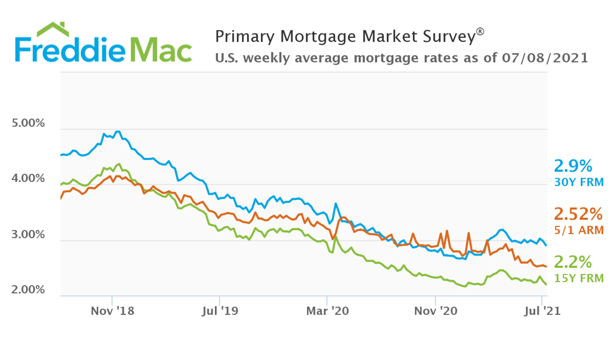

Recently, Zillow has announce to terminate IBuyer program partially due to the accelerating housing values causing portential risks on earnings and balance-sheet volatility (Source). With all the concerns and attentions from both individuals and public, this portfolio will give some insights of the U.S. real estate market. Indeed, the U.S. real estate market is "on fire" in 2020. U.S. home prices hit the highest level since 2006 (Bahney, 2021, Friedman, 2021). In fact, according to Zillow analysis, the U.S. housing market value gained about $2.5 trillion in last year. Within that, about 88% of the gained value ($2.2 trillion) was from appreciation of existing homes, while 12% counting for $274 billion was from new construction, which indicated that the housing stock might be continued to increase with no sign of cooling off.
There are many reasons behind this increasing. The number one would be the record-low mortgage rate. According to Freddie Mac, 30-year fixed rate decreased from 5% in 2018 to 3% in 2021 (Figure 1). The interest rate is the amount charged on top of the principal by a lender to a borrower for the use of assets. Due to the COVID-19 pandemic, U.S. interest rate has been cut by Federal researve by a total of 1.5 percentage points since March 3, 2020. This made homebuyers more easy to pay their debt to the lenders.  Figure 1. Historical mortgage rate, source:Freddie Mac
Low mortgage rate is not the only reason the housing market thrive. Pandemic also increased the flexible work arrangement (e.g. work from home). Work from home concept is changing people's home buying decision (Source). Instead of paying high rent in the city, many people would buy a home. In addition, the location of buying a home is also shifting from city center to the city's outskirts. Compared to the city center, houses in the city's outskirts are larger in size and more affodable. Moreover, safty and hygiene concerns highlight the advantage of buying a home.
On the other hand, low inventory of selling home cannot fullfill the high demand and cause the increasing of home sales price. Compared to 2019, the U.S. total home value increased 7% in 2020 with total value of 2.5 trillion U.S. dollars (Figure 2). As a comparison, this number was around 3.7% in 2019 compared to 2018. Among all the state, California counts for 21.4% of the total U.S. housing value. The next three states are New York, Texas, and Florida. The variance of the housing value of different states are high. According to Zillow Market Reports, "North Dakota ($64 billion), Wyoming ($70 billion) and South Dakota ($72 billion), three of the least-populous states, have the smallest shares of the U.S. housing market. Alaska was the only state where the housing stock lost value in 2020, down 1.8% or about $1.5 billion. That was caused by relatively low levels of new construction and declining values among homes in Alaska’s top tier."

The thriving of housing market also draws public attention. There are 564,000,000 news about real estate using Google News Search (Google News Searching). According to RiteTag, in the last 24 hours from generating this article, there are 388 unique tweets with 901,546 hashtag exposure for #real estate on Twitter and Instagram. For #home, there are 9,475,304 hashtag exposure. Not only realtor and home buyers, potential buyers are also involved. Wendy Edelberg, the editor of Brookings scholor wrote in her recent article: "As measured by the CPI, the annual rate of inflation from October 2020 to October 2021 was 6.2 percent. As measured by the PCE deflator, the annual rate of inflation from September 2020 to September 2021 (the most recent available data) was 4.4 percent." This recent inflation makes many people think investment may be a good choice.
With all the concerns and attentions from both individuals and public, this portfolio will give some insights of the U.S. real estate market. Such as if the 2020 market is thriving in almost all regions in the U.S.? Is there a specific market (e.g. condo, single family house) that has more increasing than others? Under such market, what realtors and home buyers react and what they care about? Addressing those concerns, individuals like realtors, investors, and homebuyers, and the public like the press would have more clear idea about what others react about this thriving and what they might want to do in the future.